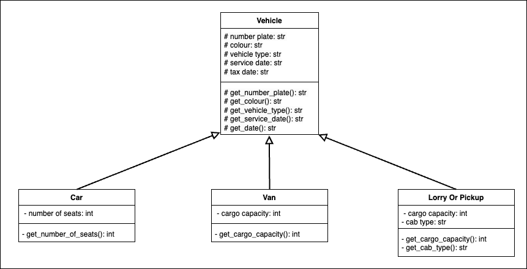

src.utils package¶
Module contents¶
This package contains utilities used across the app.
Submodules¶
src.utils.vehicle_classes module¶
This diagram outlines the design of the vehicle classes describing the inheritance between them:
Defines classes that represent the vehicles in the system.
There are four ‘specialised’ vehicles: Car, Van, Lorry, Pickup, these are represented in an object oriented way by the three classes in this module.
All ‘specialised’ vehicles inherit from the base class Vehicle, which provides common methods and properties for each vehicle.
- class src.utils.vehicle_classes.Car(number_plate: str, colour: str, vehicle_type: str, num_of_seats: int, mot_due_date: str, tax_due_date: str)[source]¶
Bases:
VehicleCar class that inherits from vehicle.
- property num_of_seats: int¶
Get current number of seats.
- Returns:
current number of seats.
- property properties: list¶
Get all car properties as a list.
- Returns:
The list of the vehicles properties
- Return type:
vehicle_properties (list)
- class src.utils.vehicle_classes.LorryOrPickup(number_plate: str, colour: str, vehicle_type: str, cargo_capacity: int, cab_type: str, mot_due_date: str, tax_due_date: str)[source]¶
Bases:
VehicleClass that represents both lorries and pickups.
Inherits from vehicle.
- property cab_type: int¶
Get cab type of lorry.
- Returns:
Lorry’s cab type
- property cargo_capacity: int¶
Get cargo capacity of lorry.
- Returns:
Lorry’s cargo capacity
- property properties: list¶
Get all car properties as a list.
- Returns:
The list of the vehicles properties
- Return type:
vehicle_properties (list)
- class src.utils.vehicle_classes.Van(number_plate: str, colour: str, vehicle_type: str, cargo_capacity: int, mot_due_date: str, tax_due_date: str)[source]¶
Bases:
VehicleVan class that inherits from vehicle.
- property cargo_capacity: int¶
Get cargo capacity of van.
- Returns:
Vans cargo capacity
- property properties: list¶
Get all van properties as a list.
- Returns:
The list of the vehicles properties
- Return type:
vehicle_properties (list)
- class src.utils.vehicle_classes.Vehicle(number_plate: str, colour: str, vehicle_type: str, service_due_date: str, tax_due_date: str)[source]¶
Bases:
objectvehicle class, defines methods and variables to be inherited.
- property colour: str¶
Get current colour.
- Returns:
colour.
- property number_plate: str¶
Get current plate.
- Returns:
number plate.
- property properties: list¶
Get all vehicle properties as a list.
- Returns:
The list of the vehicles properties
- Return type:
vehicle_properties (list)
- property service_due_date: str¶
Get mot due date.
- Returns:
MOT due date
- property tax_due_date: str¶
Get tax due date.
- Returns:
tax due date
- property vehicle_type: str¶
Get current vehicle type.
- Returns:
vehicle type.
src.utils.build_classes module¶
Code to build the vehicle classes used by some GUI windows.
- src.utils.build_classes.assign_all_vehicles_classes(sql_result: list) list[source]¶
Assign the classes for the ‘list all vehicles window.
- Parameters:
sql_result (list) – The result of an sql select query
- Returns:
list of classes with values assigned
- Return type:
output(list)
- src.utils.build_classes.assign_num_plate_classes(num_plate: str) list[source]¶
Assign values to classes for ‘vehicles by number plate’ window.
- Parameters:
num_plate (str) – the number plate of the vehicle
- Returns:
list of classes with assigned values
- Return type:
output(list)
- src.utils.build_classes.assign_service_due_classes(sql_result: list) list[source]¶
Assign values to classes for ‘vehicles by service due’ window.
- Parameters:
sql_result (list) – The result of an SQL select query
- Returns:
list of classes with assigned values
- Return type:
output(list)
src.utils.do_nothing module¶
This function does nothing in a flake 8 compliant way.
Since ‘pass’ keyword and similar trigger flake 8 call this to do nothing - ‘good’ coding practice apparently
src.utils.run_sql module¶
A utility file containing functios for executing sql on the database.
- src.utils.run_sql.delete_from_db(num_plate: str, vehicle_type: str)[source]¶
Run the delete vehicle script to remove a vehicle from a db.
- Parameters:
num_plate (str) – The number plate of the vehicle to remove
vehicle_type (str) – The type of the vehicle being removed
- src.utils.run_sql.execute_sql(filename: str)[source]¶
Read sql file then execute it.
- Parameters:
filename (str) – path to sql file
- src.utils.run_sql.execute_sql_select(filename: str) list[source]¶
Run an SQL select statement.
- Parameters:
filename (str) – path to sql file
- Returns:
returns the result of the select
- Return type:
output (list)
- src.utils.run_sql.get_conn()[source]¶
Get connection to the databse.
- Returns:
the database connection
- Return type:
connection
- src.utils.run_sql.insert_car(properties: list)[source]¶
Insert a new entry into the car table of the DB.
- Parameters:
properties (list) – The properties of the car to be inserted
- src.utils.run_sql.insert_lorry(properties: list)[source]¶
Insert a new entry into the lorry table of the DB.
- Parameters:
properties (list) – The properties of the lorry or pickup to be inserted
- src.utils.run_sql.insert_van(properties: list)[source]¶
Insert a new entry into the van table of the DB.
- Parameters:
properties (list) – The properties of the van to be inserted
- src.utils.run_sql.insert_vehicle_into_db(properties: list)[source]¶
Take parameters from a Vehicle properties and insert into db.
- Parameters:
properties (list) – The vehicle properties to be inserted
- src.utils.run_sql.read_sql_file(filepath: str) str[source]¶
Read an sql file from a filepath into a str.
- Parameters:
filepath (str) – the filepath of the SQL file
- Returns:
the str contaning the SQL script
- Return type:
sql_script (str)
- src.utils.run_sql.select_based_on_type(vehicle_type: str, num_plate: str) list[source]¶
Select from database a specific vehicle based on its type.
- Parameters:
vehicle_type (str) – The type of vehicle we are selecting.
num_plate (str) – The number plate of the vehicle we are selecting.
- Returns:
The output of the SQL select statement.
- Return type:
list
- src.utils.run_sql.select_type_from_num_plate(num_plate: str) str[source]¶
Select from the database a vehicle with a number plate.
- Parameters:
num_plate (str) – The number plate to attempt to retrieve from DB
- Returns:
The type of selected vehicle
- Return type:
vehicle_type (str)
- src.utils.run_sql.update_specific_type(changed_values: dict, vehicle_type: str, number_plate: str)[source]¶
Update a specific type of vehicle in the database.
- Parameters:
changed_values (dict) – The dictionary with the values to upate in them
vehicle_type (str) – The vehicle type of the vehicle to update
number_plate (str) – The number plate of the vehicle be updated
- src.utils.run_sql.update_vehicle(changed_values: dict, vehicle_type: str, number_plate: str)[source]¶
Update the vehicle’s details based on values in dictionary.
- Parameters:
changed_values (dict) – The dictionary with the values to upate in them
vehicle_type (str) – The vehicle type of the vehicle to update
number_plate (str) – The number plate of the vehicle be updated
src.utils.transfrom_properties module¶
Script to transform properties to be db friendly.
- src.utils.transfrom_properties.transform_colour(colour: str)[source]¶
Transform colour from string to id.
- Parameters:
colour (str) – the colour to be converted
- Returns:
the colour converted to an id
- Return type:
converted_colour
src.utils.valid_inputs module¶
File that stores dictionaries of valid types to be used in code.
src.utils.verify_inputs module¶
This module verifies inputs entered.
Throws type errors if they are incorrect.
- src.utils.verify_inputs.verify_cab_type(cab_type: str, vehicle_type: str)[source]¶
Verify a cab type is correct for vehicle type.
- Parameters:
cab_type (str) – The cab type to check
vehicle_type (str) – The vehicle type to check against
- Raises:
TypeError – if cab type is invalid
- Returns:
if no error is thrown returns true
- Return type:
True
- src.utils.verify_inputs.verify_date(date: str)[source]¶
Verify a date is correct format.
- Parameters:
date (str) – The date to check
- Raises:
TypeError – if date is invalid
- Returns:
if no error is thrown returns true
- Return type:
True
- src.utils.verify_inputs.verify_inputs(vehicle: Vehicle)[source]¶
Verify inputs from Vehicle object.
- Parameters:
vehicle (Vehicle) – Vehicle object to check
src.utils.window_scripts module¶
Scripts that are called by the GUI windows.
The idea is that these functions ‘connect’ the front-end to the backend. They handle logic for when an operation is requested by the user, and then call run_sql to get and modify data from the db.
- src.utils.window_scripts.generate_insert_widgets(frame: Frame, vehicle_type: str) list[source]¶
Generate the widgets to be used in the insert vehicle window.
- Parameters:
frame (tk.Frame) – The frame used in the widgets
vehicle_type (str) – The selected vehicle type
- Returns:
The list of generated widgets
- Return type:
element_list (list)
- src.utils.window_scripts.generate_insert_widgets_from_type(frame: Frame, vehicle_type: str, element_list: list) list[source]¶
Generate widgets based on the type of vehicle.
Helper function to generate_insert_widgets
- Parameters:
frame (tk.Frame) – The frame used in the widgets
vehicle_type (str) – The selected vehicle type
element_list (list) – The list of elements to be appended to
- Returns:
The list with vehicle specific widgets appended
- Return type:
element_list (list)
- src.utils.window_scripts.get_text_by_vehicle(vehicle: object) str[source]¶
Given a vehicle, programmaticly generate its display text.
Based on it’s type and what variable it has assigned.
- Parameters:
vehicle (object) – The vehicle class to generate text from
- Returns:
The generated text
- Return type:
output(str)
- src.utils.window_scripts.get_text_to_display(text_object: Text, vehicles_list: list)[source]¶
Insert rows of veichle information into TK.Text object.
- Parameters:
text_object (tkinter.Text) – The original text object
vehicles_list (list) – list of veichles to be inserted into text
- Returns:
The modified text object
- Return type:
text_object(tkinter.Text)
- src.utils.window_scripts.get_update_widgets_from_plate(frame: Frame, num_plate: str) list[source]¶
Return a list of elements for the update car window.
Returned elements is based on the number plate entered
- Parameters:
frame (tk.Frame) – The window frame for the elements
num_plate (str) – The plate to base the elements on
- Returns:
The widgets for the update vehicle window
- Return type:
widgets (list)
- src.utils.window_scripts.insert_values(element_list: list[tkinter.Text], vehicle_type: str)[source]¶
Assign the values entered to a vehicle and insert into db.
Verify entered data is all correct.
- Parameters:
element_list (list[tk.Text]) – The list of elements in the window
vehicle_type (str) – Selected type of vehicle
- src.utils.window_scripts.remove_vehicle_from_db(num_plate: str)[source]¶
Remove the vehicle from the database.
- Parameters:
num_plate (str) – The number plate of the vehicle to remove.
- src.utils.window_scripts.update_changed_values(element_list: list[tkinter.Text], num_plate: str)[source]¶
Find what values of a car should be changed then update them.
- Parameters:
element_list (list[tk.Text]) – The list of text elements from window
num_plate (str) – The number plate of the vehicle to be updated
- Returns:
Return true if succesful false if it is not
- Return type:
flag (bool)